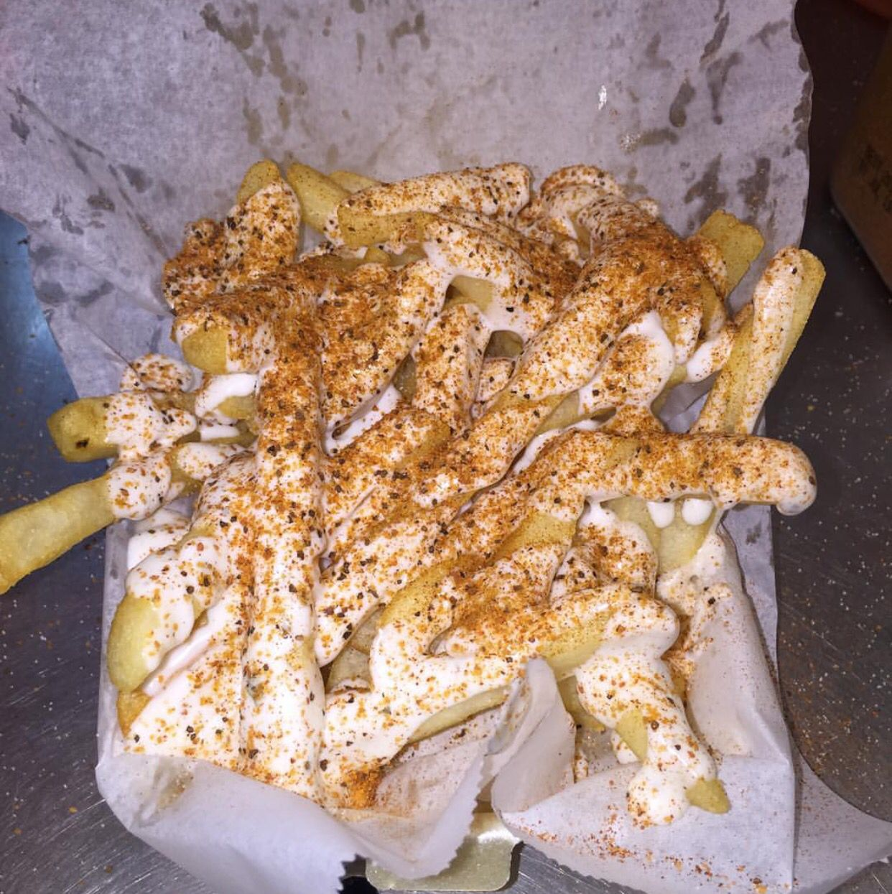

Cajun Ranch Fries

Description
These hot, crispy, cajun fries are the perfect side to a plate of wings. This recipe will show you how to create this yummy dish!
Ingredients
- Several large potatoes
- Paprika
- Cajun spice
- Garlic powder
- Salt
- Black pepper
- Ranch
- Canola oil
Steps
- Slice potatoes into thin slices.
- Added potatoes to pot of boiling water.
- After about 20 minutes, remove potatoes and place them in a bowl of cold water.
- Mix all dry seasonings together in small bowl.
- Pat dry the potatoes
- Place potatoes in pot/deep fryer to cook.
- Once cooked fully, top potatoes with ranch dressing.
- Top potatoes with mixed seasonings.
- Enjoy!